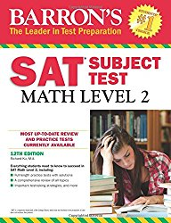
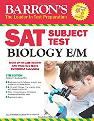

Importance of Subject Tests
Taking subject tests is an important and often neglected part of applying to college. It is not always necessary to take subject tests if your list consists of schools that don't recommend them, but they can always help and for schools that do recommend them they are important.
Some top schools accept the SAT with two subject tests or the ACT without subject tests as an option. The ACT without subject tests is not actually a legitimate option in most cases; subject tests are still ‘recommended’ and in top school speak that means ‘required’ because they have so many applicants to choose from who have taken subject tests.
The only real justification for submitting the ACT in lieu of subject tests is a financial inability to pay for subject tests or not having access to them (if it is too late to take them just focus on the other intangibles).
If state schools or schools with acceptance rates higher than 40% make up the majority of your list, though, it might not be worth it to take the tests. Check your college's requirements /recommendations. Still, having good subject test scores to submit can only strengthen your application.
How Many Subject Tests Do I Take?
In general you should aim for two good subject test scores to submit (not the same test like Math 1 and Math 2) as most schools will consider two scores the most. Although some do recommend three. If you can do well on more than two or three go for it, but understand that past three the benefit of additional subject tests becomes fairly negligible.
Subject Test Grading
Unlike the normal SAT there is a slight point deduction for wrong answers. For five-choice questions it is 1/4 point, four-choice 1/3 point, and 3-choice is 1/2 point. In the end the final score is rounded. This may seem like an incentive to leave questions blank because 0 points is better than negative points.
I would advise against leaving any blank, though. If you can eliminate just one wrong answer, then it is statistically advantageous for you to guess despite these point deductions. (https://collegereadiness.collegeboard.org/sat-subject-tests/scores/how-tests-are-scored)
Do I Have A 'Good' Subject Test Score?
Not all subject test scores are the same. A 790 in Math 2 is equivalent to around a 720 in US History. How does this make sense?
Percentiles. All standardized tests are, after all, relative. Before I give my quick analysis I’ll provide the most up-to-date Collegeboard Subject Test percentile chart so that you can see for yourself.
College Board Subject Test Percentiles for 2016As you can see the percentiles of different scores vary tremendously. Getting a 790 on the Literature Subject Test is very impressive considering it is the 97th percentile. Getting a 790 on Math 2 is not as good. Math 2 has a strong curve so you can get around 5 wrong and still get an 800. Thus all of the kids who get none wrong and who get 5 wrong get 800s. You ‘cap’ your math 2 competency when you get a 790, so there is a little bit of added value to getting a perfect score on a subject test. It is especially advantageous if you barely get an 800 because colleges won’t know whether you are a math 2 guru or barely got an 800 because a perfect score is a perfect score.
That is really only directed to the super high-achievers, though, and this ‘value in a perfect score’ thing is something you should be careful about. For normal standardized tests there is no more value in getting a 36 ACT instead of a 35 than a 35 instead of a 34. A one point increase is of the same value and getting a perfect score does not carry with it extra value for your application.
Understand the percentiles for the subject tests you are taking so you know what score to aim for. If you are potentially ‘ivy bound’ you should really be at least 80th percentile for the tests to not be a weakness; the tests can be a real strength, though, particularly if you score highly on a test with favorable percentiles e.g., getting an 800 on Literature can be a fairly big boost to your application. Understand that the people who take subject tests are higher caliber students because subject tests are only recommended for fairly selective colleges. Scoring a high percentile can be very difficult. So, even if you score around average (50th percentile), you can still be proud knowing that the pool of students who take subject tests are above average.
The Best General Subject Test Book
This is the Official College Board created book that contains two practice tests for each SAT Subject Test. These tests are probably the most accurate you’ll find, for it is created by the makers of the test. If you are taking multiple subject tests and don’t want to buy multiple books, then this is very useful. I’d suggest buying it either way, though, because studying other books and using the practice tests in here as an indicator at the end of your study period is very useful. I’d advise taking the first one in here after some studying and then the second one a couple of days before the test- reviewing what you got wrong thoroughly.

Amazon Link to 'The Official Study Guide for ALL SAT Subject Tests, 2nd Edition'
Subject Tests
I can give personal insight into the subject tests I’ve taken as well as call upon the insight of my friends who have taken other exams. I’ll recommend subject test books based on personal use, recommendations, and extensive research.
List of All Subject Tests: Math 1 and Math 2, Ecological Biology and Molecular Biology, Chemistry, Physics, Literature, US History, World History, French, Spanish, Latin, Chinese, Italian, German, Modern Hebrew, Korean
Math 2 Subject Test
This is the one subject test that in general most students should take. Even if you aren’t mathematically inclined it would be a good opportunity to show that math is not a weakness for you. Math 1 is essentially pointless to take. Even if you struggle with math, math 2 only extends up to trigonometry.
This is the book I used and would recommend. It over prepares you, so don’t worry if you aren’t getting as high of a score on their practice tests. You’d probably be safe adding at least around 50 points to your practice test score to get closer to your actual test score. Don’t fret, though, if you aren’t scoring that highly on these practice tests (I was scoring around 700 consistently and got an 800 on the actual test pretty comfortably); just study the content and go in with confidence knowing you are thoroughly prepared.
Amazon Link to 'Barron's SAT Subject Test: Math Level 2, 12th Edition'
Back To List
Biology E/M Subject Test
If you took AP Biology you are likely better prepared for the Molecular Biology Exam, but both are similar as long as you cover the extra content.
I used both the Barron’s and Princeton Review SAT Subject test. I would suggest the Barron’s as it was more accurate and the practice tests were great for preparation albeit a bit more difficult than the test (I scored 690 on the first practice test and then 760 on the second after studying the book. I then scored an 800 on the actual Bio M test). Still, though, if you feel wholly unprepared with only one book, then the Princeton Review is good to read over just to solidify the content in your mind.
Princeton Review (decent supplementary resource):

Amazon Link to 'Cracking the SAT Biology E/M Subject Test, 15th Edition (College Test Preparation)'
Back To List
Chemistry Subject Test
With Chemistry it is close between Barron’s and Kaplan’s. As expected Barron’s is great at slightly over preparing you but for Chemistry there is some extra and likely unnecessary information. I would still suggest Barron’s (particularly if you are going for an 800) but Kaplan is closer to the actual difficulty of the test and is definitely a viable option.

Amazon Link to 'Barron's SAT Subject Test: Chemistry, 13th Edition'
Kaplan Test Prep (a very close second):

Amazon Link to 'SAT Subject Test Chemistry (Kaplan Test Prep)'
Back To List
Physics Subject Test
I would recommend Barron’s as a must-have, especially if you are aiming for a very high score. Princeton Review provides great practice tests, though, so is a great book to have as well. Getting both to use the Kaplan’s for studying and Princeton Review for practice tests is probably overkill, but it wouldn’t hurt.
Amazon Link to 'Barron's SAT Subject Test: Physics, 2nd Edition'
Princeton Review (more accurate practice tests):
Amazon Link to 'Cracking the SAT Physics Subject Test, 15th Edition (College Test Preparation)'
Back To List
Literature Subject Test
The literature subject test is probably the one that you could get away with not studying for. Not because it is easy but because it isn’t content based. The literature subject test is actually quite difficult but that just means that getting a higher score is more impressive.
I used the Barron’s to study a little bit, as it was the third subject test I took on my subject testing day. The Barron’s is again the best book to study with and again is slightly more difficult than the actual test.

Amazon Link to 'Barron's SAT Subject Test Literature, 6th Edition'
Back To List
US History Subject Test
Despite my usual recommendation of the Barron’s study book, I would recommend the Kaplan book for US History. It supplies all the content you need even if you didn’t take AP US History and the practice tests are accurate.
Amazon Link to 'SAT Subject Test U.S. History (Kaplan Test Prep)'
Back To List
World History Subject Test
Princeton Review seems to be the best World History book, although the language can be a bit casual.

Amazon Link to 'Cracking the SAT World History Subject Test (College Test Preparation)'
Back To List
Language Subject Tests
French: Amazon Link to 'Barron's SAT Subject Test French: With Downloadable Audio, 4th Edition'
Spanish: Amazon Link to 'Barron's SAT Subject Test Spanish, 4th Edition: with MP3 CD'
Latin: Amazon Link to 'SAT Subject Test™: Latin w/CD (SAT PSAT ACT (College Admission) Prep)'
Chinese: Amazon Link to 'Chinese SAT II Simulated Tests' (not great)
Italian: Amazon Link to 'ITALIAN (SAT Subject Test Series) (Passbooks) (COLLEGE BOARD SAT SUBJECT TEST SERIES (SAT))' (not great)
German: Amazon Link to 'GERMAN (SAT Subject Test Series) (Passbooks) (COLLEGE BOARD SAT SUBJECT TEST SERIES (SAT))' (not great)
Modern Hebrew: Amazon Link to 'HEBREW (MODERN) (SAT Subject Test Series) (Passbooks) (COLLEGE BOARD SAT SUBJECT TEST SERIES (SAT))' (not great)
Korean: Amazon Link to 'Sat II Korean: With Listening CD - Revised' (not great)
If I put (not great) in parenthesis after my recommendation it is because I don't feel confident in that recommendation, but because there are so few books on the market it seems to be the best out of them. Hopefully, if you are taking the language subject test for one of those you already know most of the content, but if not then you can try those books.